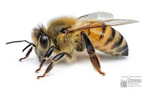
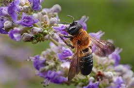
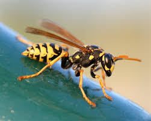
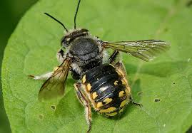
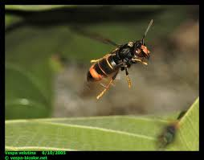
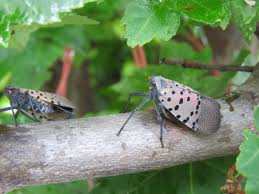

Invasive Pollinators in Westchester, NY
In Westchester, NY, several invasive pollinators can disrupt local ecosystems. While they may still provide some pollination services, they often outcompete native species, alter plant-pollinator relationships, and threaten biodiversity.

European Honeybee (Apis mellifera)
Status: Non-native but heavily managed for agriculture.
Impact: Outcompetes native bees for resources and can spread diseases to wild populations.
Status: Non-native but heavily managed for agriculture.
Impact: Outcompetes native bees for resources and can spread diseases to wild populations.

Giant Resin Bee (Megachile sculpturalis)
Origin: Native to East Asia.
Impact: Competes with native carpenter bees for nesting sites.
Origin: Native to East Asia.
Impact: Competes with native carpenter bees for nesting sites.

European Paper Wasp (Polistes dominula)
Origin: Native to Europe and Asia.
Impact: Aggressive toward native wasps and can reduce butterfly populations.
Origin: Native to Europe and Asia.
Impact: Aggressive toward native wasps and can reduce butterfly populations.

Wool Carder Bee (Anthidium manicatum)
Origin: Native to Europe.
Impact: Aggressive toward native bees; males will physically attack other pollinators.
Origin: Native to Europe.
Impact: Aggressive toward native bees; males will physically attack other pollinators.

Asian Hornet (Vespa velutina)
Origin: Native to Southeast Asia.
Impact: Known to attack and devastate bee colonies, posing a severe threat to pollinators.
Origin: Native to Southeast Asia.
Impact: Known to attack and devastate bee colonies, posing a severe threat to pollinators.

Spotted Lanternfly
Impact: Highly invasive and destructive to trees, vines, and crops. Must be reported immediately to local authorities.
Impact: Highly invasive and destructive to trees, vines, and crops. Must be reported immediately to local authorities.